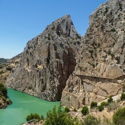
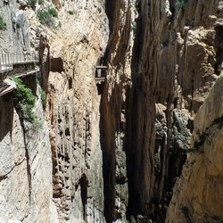

Королевская тропа
Ущелье Эль Чорро знаменито Королевской тропой (El Caminito del Rey), одной из самых захватывающих и самых опасных пешеходных троп в мире. Через известняковый каньон Эль Чорро (El Chorro) проходит река Гвадалорсе (Guadalhorce). Королевская тропа была создана в начале XX века (в 1905 году) как вспомогательный путь для рабочих, занятых на строительстве гидротехнического сооружения (плотины) Конде дель Гвадалорсе, с одной стенки каньона на другую и представляет собой сооружение, состоящее из бетона и вбитых в скалу костылей и железнодорожных рельсов. Тропа расположена между водопадами Чорро и Гайтанехо в ущелье Эль Чорро около деревеньки Алоры в Малаге, провинции Испании.
Название тропы связано с тем, что в мае 1921 года по этим местам проходил король Альфонсо XIII, направлявшийся на церемонию открытия плотины Конде на реке Гвадалорсе и в честь этого события тропинка получила название «El Caminito del Rey» — Тропинка короля.
Эль Чорро можно перевести как "рывок", это самое подходящие слово для описания того, как течет вода сквозь узкие ущелья и овраги. Разница в высоте между двумя главными водохранилищами, созданными человеком в разных концах ущелья, предоставляет уникальную возможность для развития ГЭС. В то время это была почти революционная концепция. Реки, озера, каньоны, и деревья стали торговой маркой Makinodromo, а сама эта местность известна как один из лучших альпинистских районов в Европе. Также здесь очень популярны прогулки на горных велосипедах, и кемпинги.
Гениальное сооружение, но тем не менее, самой привлекательной частью этой конструкции является именно сам путь, Эль-Каминито-дель-Рей, который проходит вдоль всего ущелья. Говорят, первоначальная конструкция была возведена моряками, которым приходилось лазить и работать в подвешенном состоянии над пустотой. Некоторые источники (неподтвержденные) заявляют, что заключенные, осужденные на смертную казнь, так же участвовали в строительных работах и выполняли самые опасные задания.
Тропа была построена с использованием песка и цемента, а удерживается на месте благодаря металлическим кронштейнам. Так же без лишних излишеств были использованы железнодорожные рельсы. Такая опасность и риск стали материалом для множества легенд и привлекли многих альпинистов и любителей адреналина со всего мира.
Королевская тропа была заброшена и не поддерживалась долгие годы и потому в конце 1990х стала известна как наиболее опасная пешеходная тропа в мире. Несмотря на то, что официально Королевская тропа была закрыта для посещений, многие люди, не боящиеся высоты, всё же проходили её, применяя страховочное оборудование в виде фала с карабином, который пристёгивался к стальным страховочным тросам, специально протянутым вдоль самых опасных мест пути, где не было поручней.
Этот в прямом смысле головокружительный маршрут был официально закрыт после гибели на нем четверых экскурсантов в 1999-2000 гг. С тех пор состояние тропы ухудшалось и, теоретически, проходить по ней нельзя. Однако ни запрещающие плакаты, ни штрафы не в силах удержать множество любителей экстремального туризма.
В 2006 году правительство Андалусии разработало проект ремонта этой дороги, для её последующего открытия как официального туристического маршрута. Бюджет проекта составлял 7 млн. евро.

Провинциальный совет Малаги начал восстанавливать эту дорогу в марте 2014 года, и в начале 2015 года Королевская тропа открылась вновь. Королевская тропа заканчивается в небольшой деревушке Эль-Чорро (возле Алоры), которая также является одним из главных пунктов скалолазания в Европе. Наиболее впечатляющим участком считается вход в ущелье Гаитанес. Восстановительные работы затронули все четыре километра дороги, в частности, 1,2-километровый пешеходный мост, висящий среди практически вертикальных стен, для чего потребовалась помощь специальных альпинистов и вертолетов. Мост был построен в начале ХХ века Гидроэлектрическим обществом Эль-Чорро для работ по содержанию плотин Гайтанехо и Чорро.
Тропа была открыта 29 марта 2015 года после реконструкции и упомянута в списке лучших новых достопримечательностей путеводителя Lonely planet. Что же представляет собой тропа в настоящее время? Королевская тропа (El Caminito del Rey) сегодня – пешеходная дорожка, протяженностью почти 4 километра и шириной всего в один метр, построенная буквально на стенах ущелья Гаитанес в Эль-Чорро, в провинции Малага. Тропа проложена в отвесных скалах на высоте ста метров над рекой Гвадалорсе. В настоящее время Королевская тропа полностью безопасна и открыта для посещения.